SHARP DMG CPU Cells Library
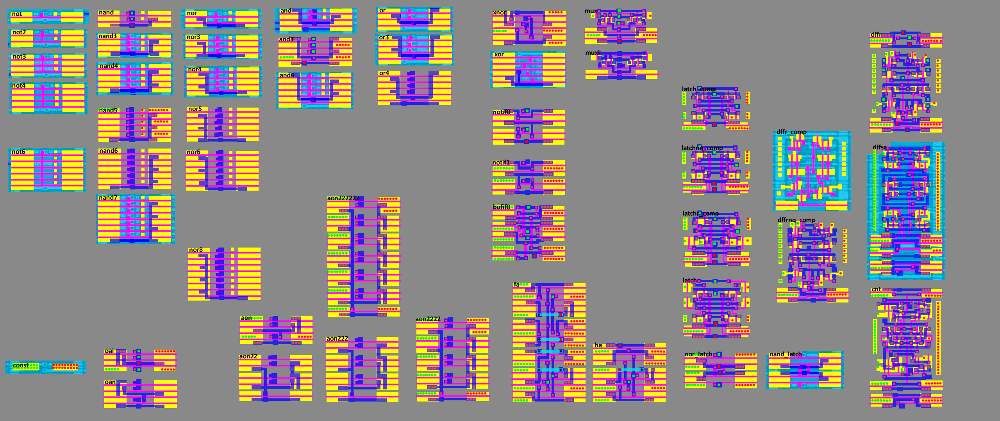
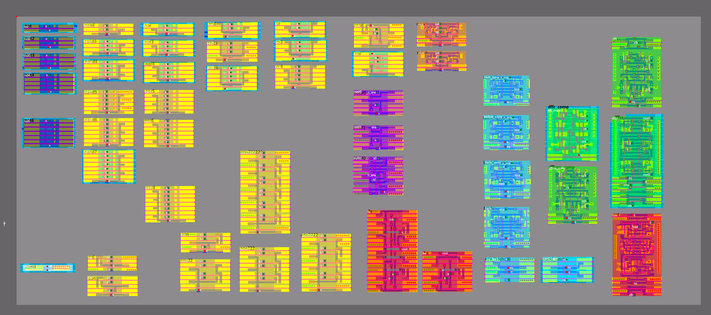
The cells shown are only part of the SHARP cell library (name?), other cell types will probably be found in other chips of this era.
Symmetry group
- In general, the dihedral group 4 (D4) is used for cells
- By agreement among all researchers ident position of the cell (
e) - when the ground is on the left - As part of modules, cells are usually simply reflected relative to the vertical axis
e <-> b(for ClkGen and Ser modules, cells are additionally rotated “sideways”) - As part of macro cells (memory), cells can be arranged arbitrarily, as is more convenient
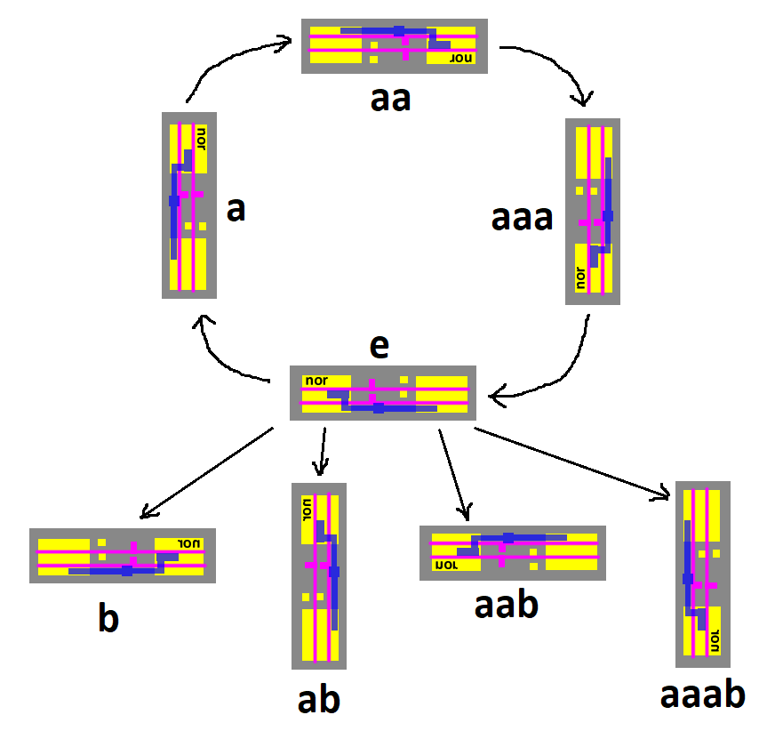
Dual-rail CLK
Sequential elements (latch, dff) are presented in two variants: with single-rail CLK and with dual-rail CLK (CLK + complement CLK). Where dual-rail CLK is used, the suffix comp is used in the cell name.
Cells list
The following are all cell types, in alphabetical order. The names of cells by @msinger (http://iceboy.a-singer.de/doc/dmg_cells.html) are shown in parentheses (where the correspondence is not obvious) The topology is not complete (m1 is missing in some places), but it is sufficient to understand the cell architecture for reimplementation.
and
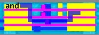
and3
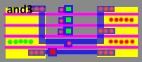
and4
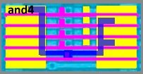
aon (AO1)
2 AND to 2 OR Non-Inverting.
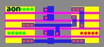
aon22 (AO2)
2+2 AND to 3 OR Non-Inverting.
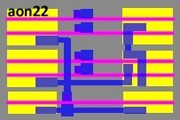
aon222 (AO3)
2+2+2 AND to 4 OR Non-Inverting.
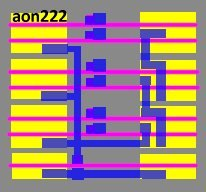
aon2222 (AO4)
2+2+2+2 AND to 5 OR Non-Inverting.
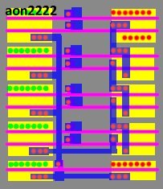
aon222222 (AO6)
2+2+2+2+2+2 AND to 7 OR Non-Inverting.
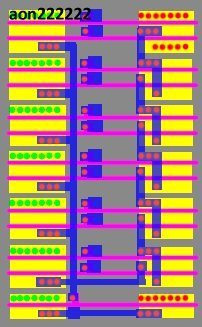
bufif0 (TRI_BUF_IF0)
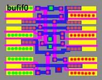
cnt (TFFD)
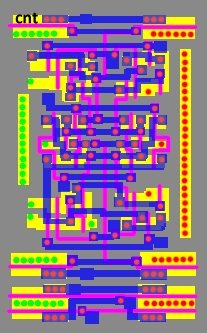
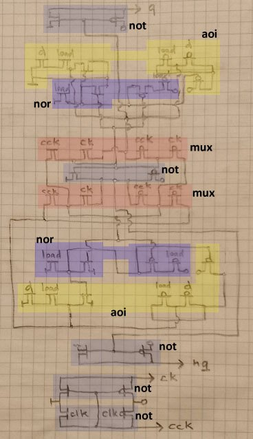
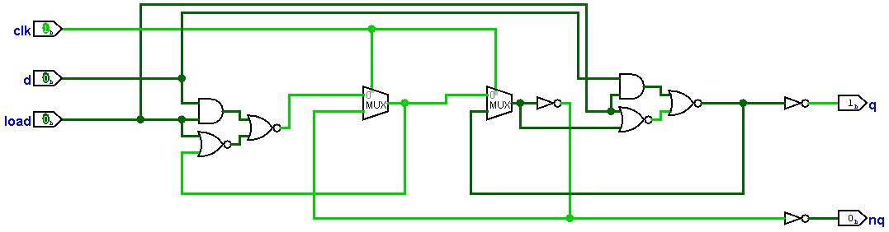
const
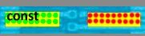
dffr - Posedge DFF With Single-rail CLK Synchronous Dual-rail Inverse Polarity Reset Q/NQ Output (DFFR_B2)
The #res input is fed separately to the Master and Slave MUX so that synchronous reset can be done. But usually #res1 and #res2 are connected externally, so the DFF becomes with asynchronous reset. The dual-rail ck/cck signals are obtained locally by demultiplexing the CLK input signal.
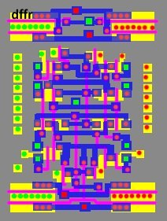
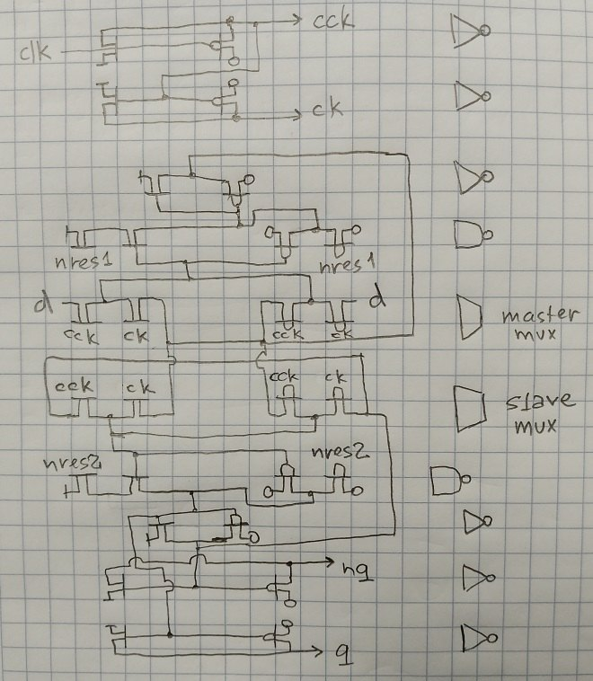
dffr_comp (DFFR_A)
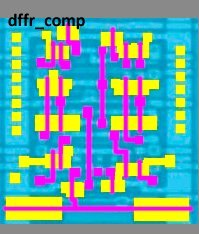
dffrnq_comp (DFFR_B1)
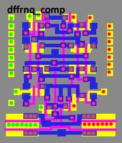
dffsr - Posedge DFF With Single-rail CLK Synchronous Dual-rail Inverse Polarity Set Asynchronous Inverse Polarity Reset Q/NQ Output (DFFSR)
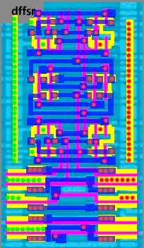
fa
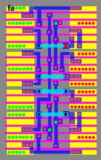
ha
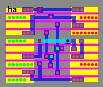
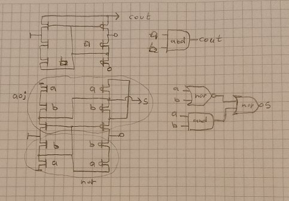
latch (D_LATCH_B)
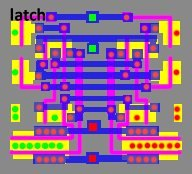
latch_comp (D_LATCH_A2)
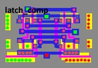
latchnq_comp (D_LATCH_A)
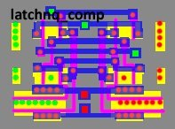
latchr_comp (DR_LATCH)
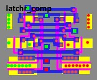
mux
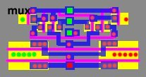
muxi
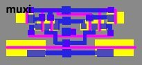
nand
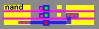
nand3
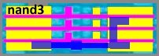
nand4
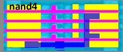
nand5
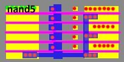
nand6
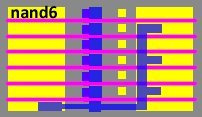
nand7
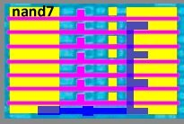
nand_latch
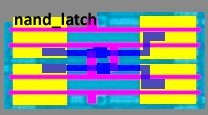
nor
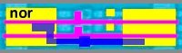
nor3
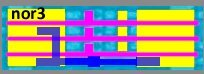
nor4
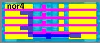
nor5
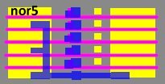
nor6
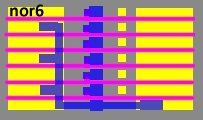
nor8
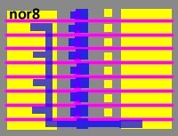
nor_latch
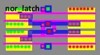
not
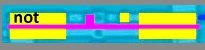
not2
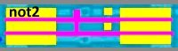
not3
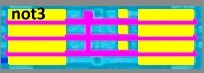
not4
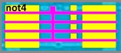
not6
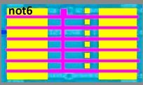
notif0 (TRI_INV_IF0)
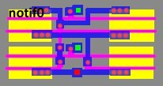
notif1 (TRI_INV_IF1)
oai
2 OR to 2 AND Inverting.
oan (OA)
2 OR to 2 AND Non-Inverting.